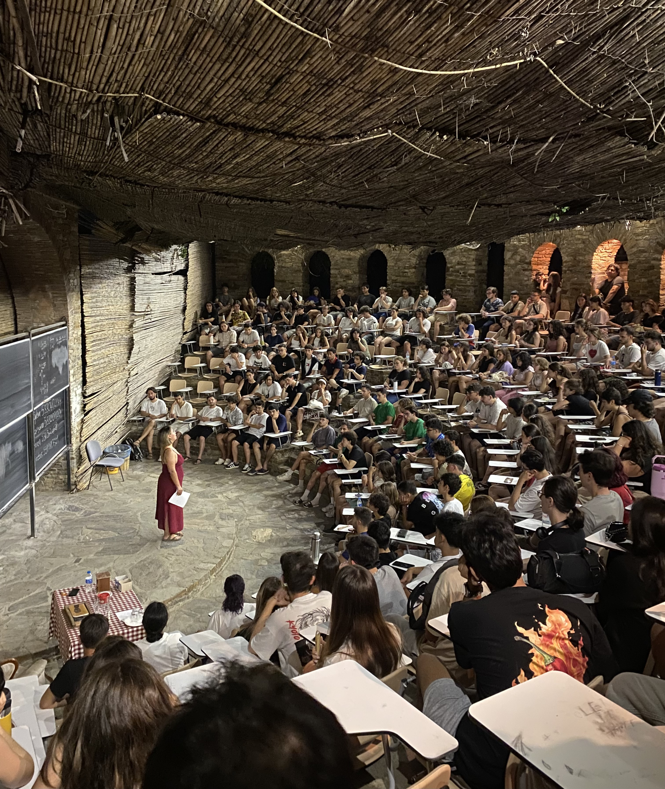
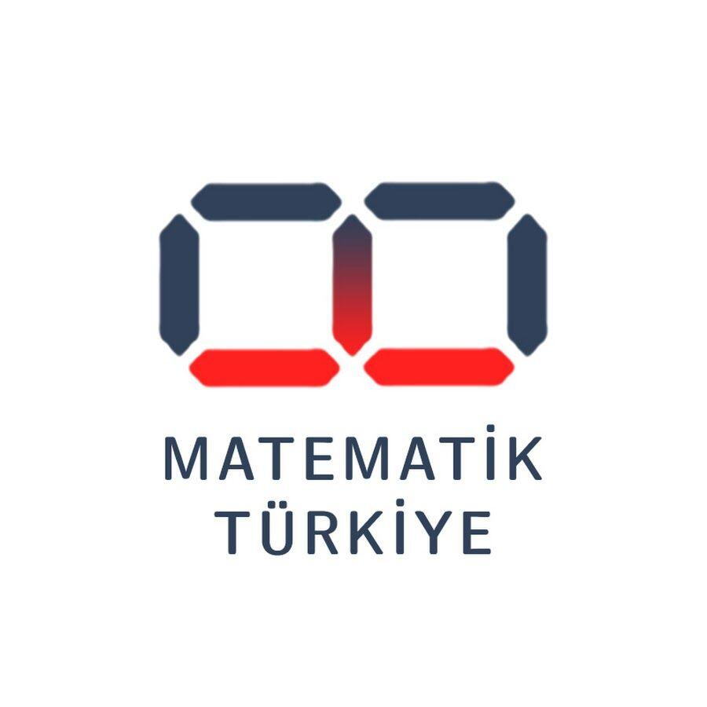
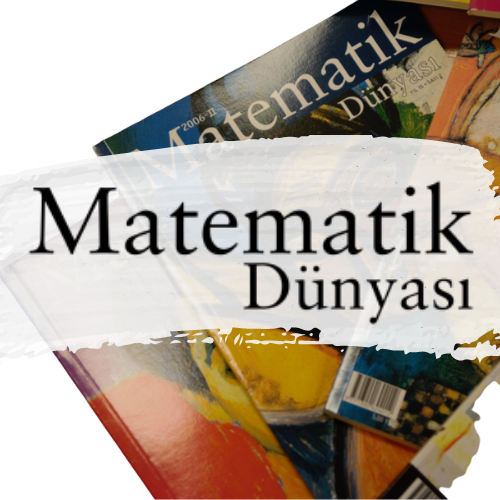

Research @ Intelligent User Interfaces Lab, Koç University
MSc student with KU Graduate Fellowship, (tuition + stipend + waiver). Conducting research under Prof. Metin Sezgin, MIT PhD on creativity, machine learning, and sketch-based interfaces.
MSc student with KU Graduate Fellowship, (tuition + stipend + waiver). Conducting research under Prof. Metin Sezgin, MIT PhD on creativity, machine learning, and sketch-based interfaces.
In collaboration with Beko, we examined current industry practices in legacy system maintenance and developer onboarding. Based on these observations, I initiated, designed, and led a team of five to develop LACY — an AI-assisted VS Code extension that simulates expert-to-learner mentorship within real development environments. The system integrates interactive code tours, contextual quizzes, and narrated walkthroughs to support human–AI collaboration in knowledge transfer. The project is currently ongoing as part of Beko R&D.
Individual Research under supervision of Prof. H. Altay Guvenir I designed a Directed MCQ (DMCQ) system to evaluate how Large Language Models like Gemini perform under human-informed guidance. The study simulates collaborative test-solving scenarios, where human cues and AI analysis jointly contribute to the elimination of options. The goal is to understand how such directed interaction influences model reasoning and accuracy in structured evaluation settings.
Mathematics has always been a shared space for curiosity. Over the years, I’ve taken part in several math communities in Turkey, contributing as a student, volunteer, and organizer — supporting both learning and outreach efforts.

I first arrived as a student, spending long summer days studying, thinking, and daydreaming under the trees. Over time, I also became a volunteer — helping in the library and kitchen so the village could keep running for students to learn, grow, and discover who they are. It’s a place where I met some of the most inspiring and important people in my life.
Visit site →
Served as board member and head of public relations; built the club’s identity and communication network. Together, we organized academic and popular events to promote mathematical culture, both online and face-to-face.
Visit site →
Helped digitize and preserve old issues of Matematik Dünyası, contributing to the journal’s online archive and continuity of mathematical culture in Turkiye.
Visit site →This project aims to generate computer music by transforming input text, specifically its rhythmic and harmonic aspects, into synthesized instrument sounds. The core idea is to correlate language and music by analyzing language syntax through rhythm and phonetics through harmony and sound combinations. The project creates two-channel music, with one channel producing drum sounds from individual letters (vowels, consonants, spaces) and the other generating piano chords from grouped syllables, offering an experimental exploration of how diverse texts translate into musical compositions using computers , drawing inspiration from historical rhythmic structures such as the dactylic hexameter of the Iliad and Arabic prosody (Aruz ölçüsü).